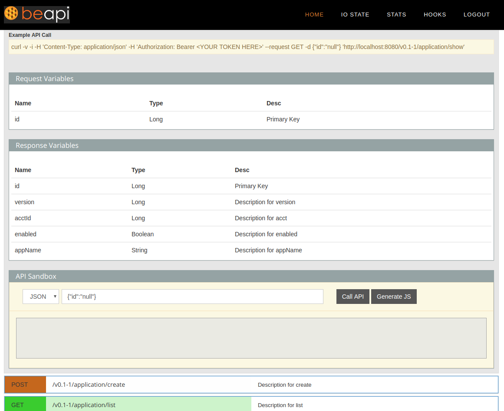

API Docs
The BeAPI Framework auto generates the API docs from your IO State files based on your token so it will only show you the endpoints that you have access to. This is an improvement over Swagger and other tools which will show the API docs for ALL ENDPOINTS regardless of who you are.
Above is a screenshot of the beapi-frontend tooling (which can be used as a node.js/express installation) showing the API Docs page.
Calling From JavaScript
$.ajax({
type:'GET',
url: window.url+"/v1.0/apidoc/show",
crossDomain: true,
cache:false,
async:true,
contentType: 'application/json',
xhrFields:{
withCredentials: false
},
beforeSend: function(request){
request.setRequestHeader('Authorization','Bearer '+window.token.access_token);
},
headers:{
'Content-Type':'application/json'
},
dataType:"text json",
success: function(json) {
...
},
error: function(jqXHR, textStatus, errorThrown) {
if (jqXHR.statusText =='abort') { return; }
console.log(jqXHR.status);
//console.log(jqXHR.getAllResponseHeaders());
console.log(textStatus);
alert(jqXHR.responseText);
},
});code>Calling From The Shell
curl -v -H "Origin: http://localhost" -H "Authorization: Bearer your_token_here" -H "Access-Control-Request-Method: OPTIONS" -H "Access-Control-Request-Headers: X-Requested-With" -H "Content-Type: application/json" --request GET "http://localhost:8080/v1.0/apidoc/show"code>Note:'Origin' needs to match the machine you are calling from (if not calling from the same machine) and it needs to be added to your 'beapi_api.yml' file under 'allowedOrigins'